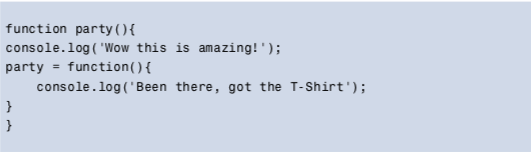
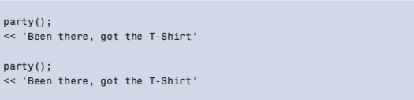

functions are first-class objects, which means they can be passed around in the same way as every other value
They can have their own properties and methods, as well as accepting other functions as parameters and being returned by other functions.
Functions are Objects:
The dynamic nature of JavaScript means that a function is able to not only call itself, but define itself, and even redefine itself. This is done by assigning an anonymous function to a variable that has the same name as the function.
Function definition redefining itselft:
First run:
Second and later run:
Json Ajax. With real examples
The Fetch API provides a global fetch() method that only has one mandatory argument, which is the URL of the resource you wish to fetch. A very basic example would look something like the following piece of code: